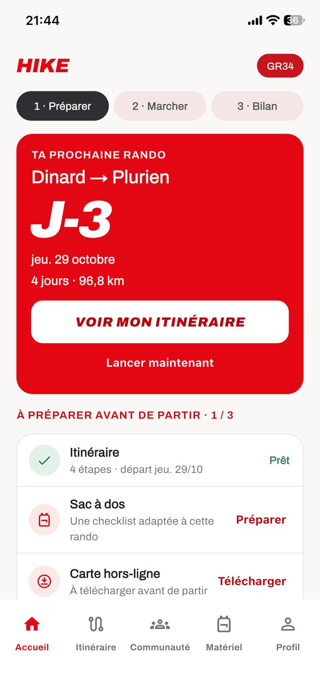
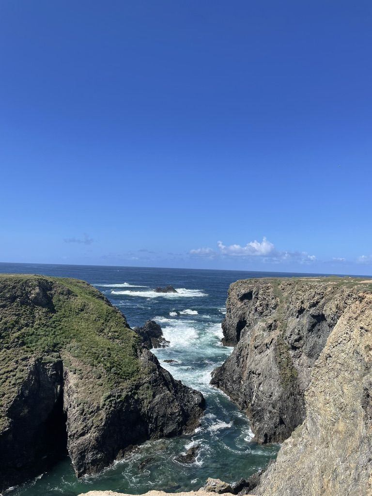
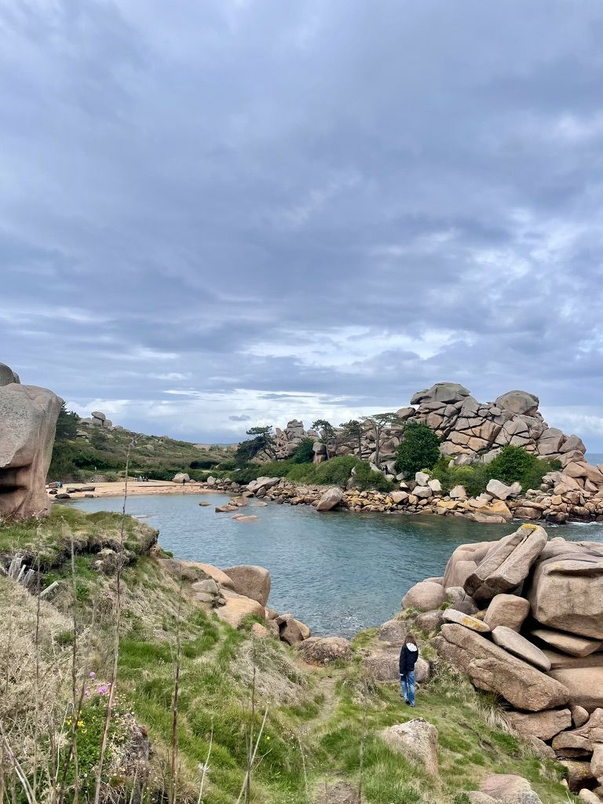
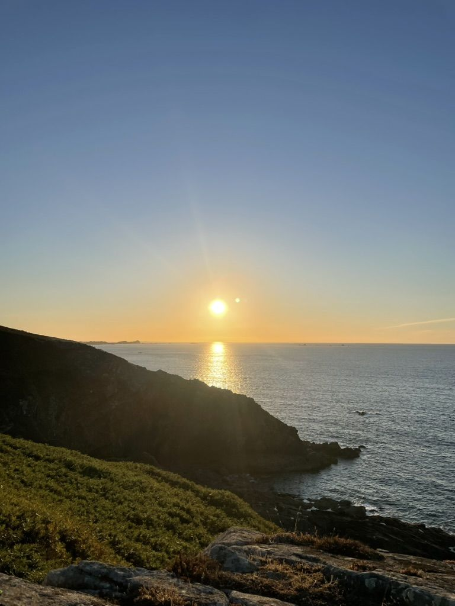
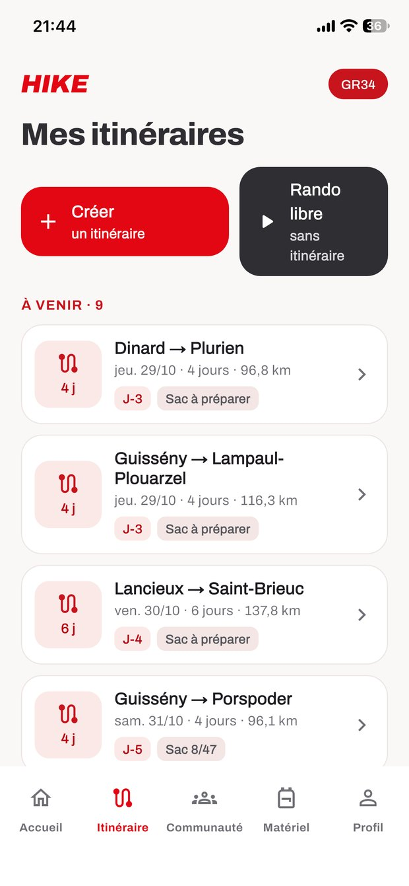
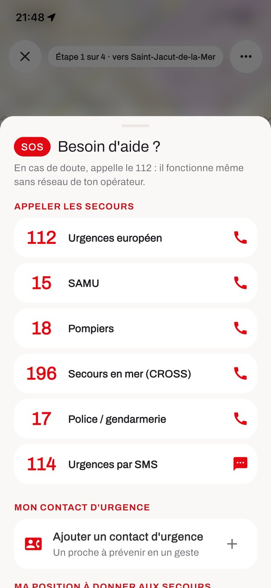
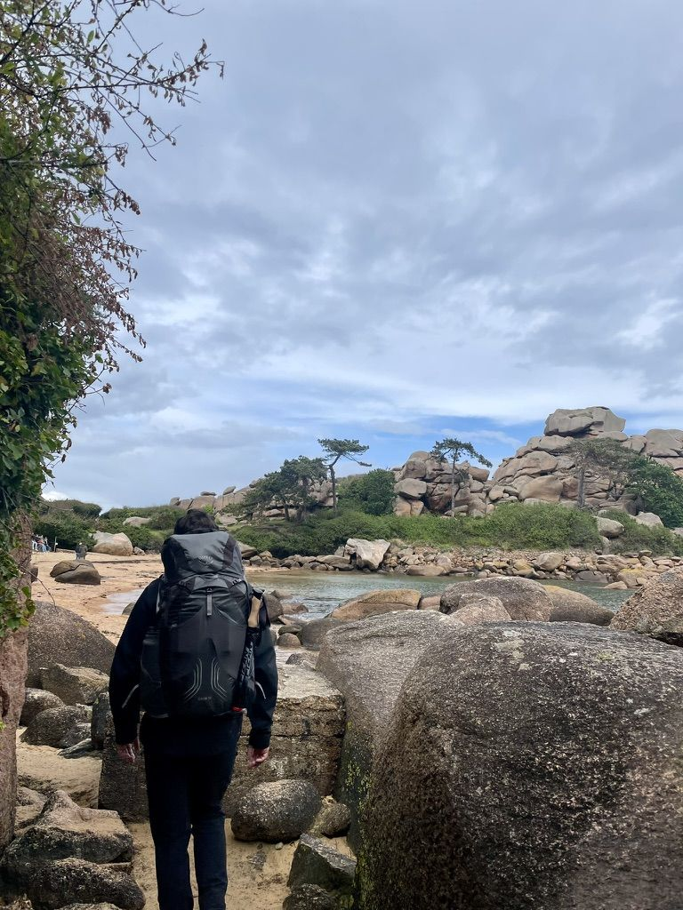
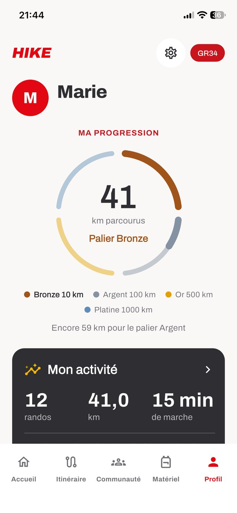
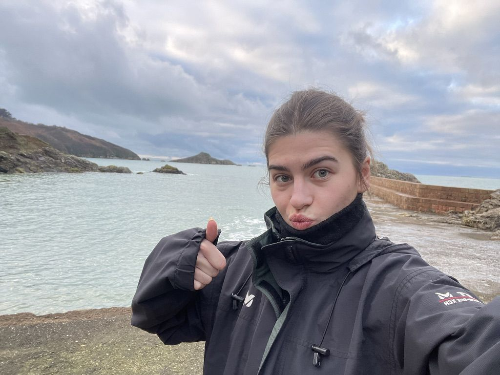

Départ · Perros-Guirec
Du premier au dernier kilomètre, HIKE marche avec toi.
Tu choisis ton départ et ton nombre de jours. HIKE découpe ton itinéraire en étapes qui finissent là où tu peux dormir, te guide même sans réseau et veille sur toi jusqu'à l'arrivée.

2 094 km
Tout le GR34
Du Mont-Saint-Michel à Saint-Nazaire, et 14 îles bretonnes.
Hors-ligne
Carte IGN gratuite
Téléchargée avant de partir, elle marche sans réseau. Pour toujours gratuite.
0 pub
Sans publicité
Ce qui est gratuit le reste. Tes données ne sont jamais vendues.



Ploumanac'h
Sur le sentier, on finit toujours par se poser les mêmes questions.
HIKE a été pensée pour répondre à tous tes besoins sur le sentier, avant, pendant et après ta rando.
Trégastel
Prépare ta rando avec HIKE.
Indique ton départ, ton nombre de jours et les kilomètres que tu veux marcher chaque jour. HIKE découpe le sentier pour toi.
- Chaque étape finit là où tu peux dormir. Gîte, camping, chambre d'hôte ou hôtel : l'étape s'arrête dans un village où passer la nuit.
- Ton rythme, dans le sens que tu veux. Par durée ou entre deux villages. Tu vois la distance de chaque jour avant de partir.
- Le niveau de chaque étape. Facile, moyen ou difficile, selon les kilomètres et le dénivelé : tu sais à quoi t'attendre.
- Où dormir, étape par étape. Campings, gîtes, hôtels et coins de bivouac près de chaque arrivée, avec l'avis des randonneurs.
- Ton sac, sans rien oublier. Météo, nuits en gîte ou en bivouac, repas, niveau, enfants ou chien : ta liste de matériel se construit pour cette rando-là.

Essaie, ici et maintenant
Découpe ta rando sur le GR34
Aperçu simplifié. Dans l'appli, chaque étape s'arrête dans un village où dormir, avec le dénivelé, le niveau, la météo et la liste du sac.
Île Grande
Vis ta rando avec HIKE.
Sur le littoral, le réseau disparaît souvent au mauvais moment. Tu télécharges la carte de ton itinéraire avant de partir, et HIKE te guide quoi qu'il arrive.
- Ta position en direct. Le GPS du téléphone fonctionne sans réseau.
- Le prochain village et les km qui restent. Tu sais toujours où tu en es dans ta journée.
- Une alerte si tu sors du sentier. Pratique quand le balisage se fait discret.
- Ton carnet de notes. Une rencontre, une bonne adresse, un conseil pour la prochaine fois : note-le sur le sentier, même sans réseau, et relis-le après.
Les secours en un geste.
Une cheville tordue, un brouillard qui tombe, une marée qui monte plus vite que prévu : le bouton SOS reste toujours à portée de main pendant ta rando.
- Tous les numéros d'urgence. 112, SAMU, pompiers, secours en mer (196), gendarmerie, et le 114 par SMS.
- Ta position exacte. Prête à être dictée aux secours, même si tu ne sais pas où tu es.
- Ton contact d'urgence. Un proche à prévenir en un geste.


Les bons arrêts sur ta route
Points d'eau, toilettes, boulangeries, pharmacies, campings, avec la distance au sentier et les horaires.
9 740 points utiles
Trébeurden
Partage ta rando avec HIKE.
Une rando, ça se raconte. HIKE garde la trace de chaque kilomètre et te permet de la partager avec ceux qui comptent.
- Tes proches te suivent en direct. Envoie-leur un lien : ils voient où tu en es, sans installer l'appli.
- Publie ta rando. Tes photos et ton parcours dans le fil HIKE, pour tes amis.
- Fais profiter les autres de tes bons spots. Coins de bivouac, points de vue, sources : les randonneurs les ajoutent sur la carte, au fil de leurs randos.
- Ton bilan, prêt pour Instagram. À l'arrivée : tes km, ton dénivelé, tes points, et une story avec ton tracé, sur ta photo ou en sticker.
- Chaque kilomètre compte. Des points pour chaque km, chaque rando et chaque coup de main à la communauté : Bronze, Argent, Or, Platine. Et des badges : premier bivouac, Grimpeur, Explorateur…

Le Yaudet
L'essentiel est gratuit. Pour toujours.
Sans publicité. Premium ajoute l'organisation complète de ta rando, pour ceux qui partent plusieurs jours.
Gratuit
0 €, sans limite
- Itinéraires découpés en étapes, autant que tu veux
- Carte IGN hors-ligne et GPS en rando
- Checklist du sac, objets perso compris
- Bouton SOS, signalements et points utiles
- Liste des hébergements de chaque étape
- Communauté, points, badges et statistiques
Premium
3,99 € / mois, 1 semaine offerte
ou 24,99 € / an, 1 mois offert
- Hébergements par étape : infos, avis des randonneurs, ton choix pour chaque soir
- Carnet de route hors-ligne : jour par jour, où manger, dormir, trouver de l'eau, quoi voir
- Variantes selon les marées pour les passages qui ne se font qu'à marée basse
- Plan B en cas de pépin sur le sentier
- Étapes sur mesure : change le village d'arrivée d'une étape
Résiliable à tout moment depuis ton compte Apple ou Google.
Saint-Michel-en-Grève
Tes questions.
L'appli marche-t-elle sans réseau ?
Oui, si tu prépares avant de partir : tu télécharges la carte de ton itinéraire, et le GPS de ton téléphone fonctionne sans réseau. Tes km sont envoyés dès que tu retrouves du réseau.
Sur quels sentiers ?
Le GR34, le sentier des douaniers en Bretagne, et les îles bretonnes au lancement. La Via Podiensis et le chemin de Stevenson suivront, puis les grands sentiers de montagne.
À quoi sert le bouton SOS ?
Il rassemble ce qu'il faut en cas de problème : appeler les secours (112), prévenir ton contact d'urgence, ta position GPS à donner ou à envoyer par SMS, les soins à proximité et un sifflet pour te faire repérer. HIKE n'appelle pas les secours à ta place.
Est-ce que je dois payer ?
Non. Itinéraires, carte hors-ligne, sac, SOS et communauté sont gratuits, sans limite et sans publicité. Premium est une option pour organiser ta rando dans le détail.
Lannion
Tu accueilles des randonneurs ?
Gîte, camping, hôtel, restaurant, commerce, office de tourisme ou lieu à visiter le long du sentier : vérifie ta fiche dans HIKE et garde-la à jour, gratuitement.
Locquirec
Pourquoi HIKE existe.
« J'ai créé l'appli que j'aurais voulu avoir sur le sentier. »
Deux ans à marcher le GR34 par étapes, et toujours les mêmes galères : où dormir ce soir, rien oublier dans le sac, une carte qui ne charge plus sans réseau. HIKE rassemble tout ce qui m'a manqué.
Marie, fondatrice de HIKE

Arrivée · Guimaëc
Sois parmi les premiers à marcher avec HIKE.
Inscris-toi sur la liste d'attente : tu seras prévenu dès la sortie, au printemps 2027, et tu pourras l'essayer avant tout le monde.
Rejoindre la liste d'attenteUn email au lancement, puis à chaque nouveau sentier. Pas de spam.
Sur ordinateur ? Scanne ce code avec ton téléphone : il t'emmène vers HIKE, et sur le bon store dès la sortie.
Sur l'App Store et Google Play au printemps 2027.